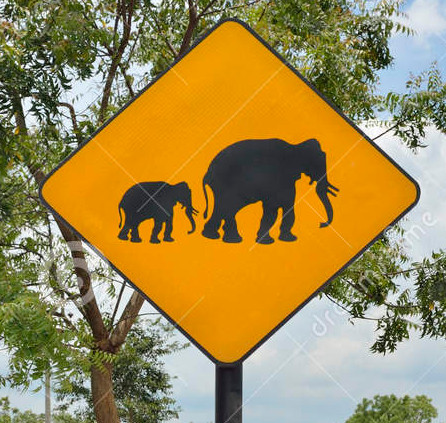
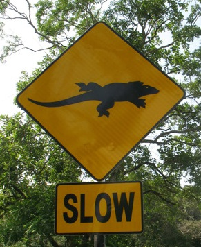
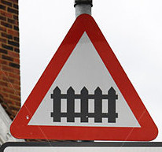
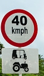

Traffic Sign Recognition
Writeup Template
You can use this file as a template for your writeup if you want to submit it as a markdown file, but feel free to use some other method and submit a pdf if you prefer.
Build a Traffic Sign Recognition Project
The goals / steps of this project are the following: * Load the data set (see below for links to the project data set) * Explore, summarize and visualize the data set * Design, train and test a model architecture * Use the model to make predictions on new images * Analyze the softmax probabilities of the new images * Summarize the results with a written report
Rubric Points
Here I will consider the rubric points individually and describe how I addressed each point in my implementation.
Writeup / README
1. Provide a Writeup / README that includes all the rubric points and how you addressed each one. You can submit your writeup as markdown or pdf. You can use this template as a guide for writing the report. The submission includes the project code.
You're reading it! and here is a link to my project code
Data Set Summary & Exploration
1. Provide a basic summary of the data set. In the code, the analysis should be done using python, numpy and/or pandas methods rather than hardcoding results manually.
I used the pandas library to calculate summary statistics of the traffic signs data set:
- The size of training set is 34799
- The size of the validation set is 4410
- The size of test set is 12630
- The shape of a traffic sign image is (32, 32, 1)
- The number of unique classes/labels in the data set is
2. Include an exploratory visualization of the dataset.
Here is an exploratory visualization of the data set. It is a bar chart showing the distribution for each traffic sign.
Design and Test a Model Architecture
1. Describe how you preprocessed the image data. What techniques were chosen and why did you choose these techniques? Consider including images showing the output of each preprocessing technique. Pre-processing refers to techniques such as converting to grayscale, normalization, etc. (OPTIONAL: As described in the "Stand Out Suggestions" part of the rubric, if you generated additional data for training, describe why you decided to generate additional data, how you generated the data, and provide example images of the additional data. Then describe the characteristics of the augmented training set like number of images in the set, number of images for each class, etc.)
- As a first step, I decided to convert the images to grayscale and then normalization. Normalized data helps Gradient Descent (or similar algorithms) to converge quickly. Hence, data normalization is one of the key preprocessing steps when it comes to data preprocessing.
One-Hot Encoding was used to convert label numbers to vectors.
I used pre-processed datasets that are already divided into training, validation and testing set. The numbers for each set is 34799,4410,12630
2. Describe what your final model architecture looks like including model type, layers, layer sizes, connectivity, etc.) Consider including a diagram and/or table describing the final model.
My final model consisted of the following layers:
| Layer | Description | |:---------------------:|:---------------------------------------------:| | Input | 32x32x1 gray image | | Convolution 5x5 | 1x1 stride, valid padding, outputs 28x28x6 | | RELU | | | Max pooling | 2x2 stride, valid padding outputs 14x14x6 | | Convolution 5x5 | 1x1 stride, valid padding,outputs 10x10x16 | | RELU|| | Max pooling 2x2 | 2x2 stride, valid padding, output 5x5x16 | | flatten | output 400 | | Fully connected+ReLU | output 120 | | Fully connected+ReLU | output 84 | | Fully connected | output 43|
3. Describe how you trained your model. The discussion can include the type of optimizer, the batch size, number of epochs and any hyperparameters such as learning rate.
To train the model, I used an optimizer cross entropy with logits, tf.nn.softmax_cross_entropy_with_logits. * batch size: 100 * epochs : 50 * learning rate : 0.001
4. Describe the approach taken for finding a solution and getting the validation set accuracy to be at least 0.93. Include in the discussion the results on the training, validation and test sets and where in the code these were calculated. Your approach may have been an iterative process, in which case, outline the steps you took to get to the final solution and why you chose those steps. Perhaps your solution involved an already well known implementation or architecture. In this case, discuss why you think the architecture is suitable for the current problem.
My final model results were:
- validation set accuracy of 0.931
- test set accuracy of 0.916
If an iterative approach was chosen: * What was the first architecture that was tried and why was it chosen: LeNet-5, as it was successfully used to classify digits image. * What were some problems with the initial architecture, it won't capture some of the features. * Which parameters were tuned? How were they adjusted and why? I didn't changed the architecture of LeNet-5, just changed some of its parameters, the number of epochs and the batch size, tried different combination and finallized the result. * How does the final model's accuracy on the training, validation and test set provide evidence that the model is working well? : The result is acceptable, not great. the difference between validation set result and test data set result is small and acceptable, meaning it is not underfitting or overfitting.
Test a Model on New Images
1. Choose five German traffic signs found on the web and provide them in the report. For each image, discuss what quality or qualities might be difficult to classify.
Here are five traffic signs (not necessary german traffic signs) that I found on the web:
   
Only Stop sign is easy to classified, because the training set has similar image, the other signs are pretty challenging.
2. Discuss the model's predictions on these new traffic signs and compare the results to predicting on the test set. At a minimum, discuss what the predictions were, the accuracy on these new predictions, and compare the accuracy to the accuracy on the test set (OPTIONAL: Discuss the results in more detail as described in the "Stand Out Suggestions" part of the rubric).
Here are the results of the prediction:
| Elephant crossing |
No passing |
| level crossing |
Bicycles crossing |
| speed limit 40 km/h |
No entry |
| iguana crossing road |
Speed limit (30km/h |
| stop |
Stop |
The model was able to correctly guess 4 of the 5 traffic signs, which gives an accuracy of 80%. This compares favorably to the accuracy on the test set of ...
3. Describe how certain the model is when predicting on each of the five new images by looking at the softmax probabilities for each prediction. Provide the top 5 softmax probabilities for each image along with the sign type of each probability.
The code for making predictions on my final model is located in the last cell before Optional cell of the Ipython notebook.
For the Stop sign, the model is very sure that this is a stop sign (probability of 1.0), and the image does contain a stop sign. The top five soft max probabilities were
| 1 |
Stop sign |
| 2.65101890e-17 |
Speed limit (30km/h)n |
| 1.74681951e-22 |
Keep right |
| 1.64366569e-23 |
Speed limit (70km/h) |
| 4.81703239e-24 |
Traffic signals |
For the other images, the model can't predict right. One of the reason is that those images are not in or similar to the training data set, so it is hard for the model to preidct right. secondly.
(Optional) Visualizing the Neural Network (See Step 4 of the Ipython notebook for more details)
1. Discuss the visual output of your trained network's feature maps. What characteristics did the neural network use to make classifications?